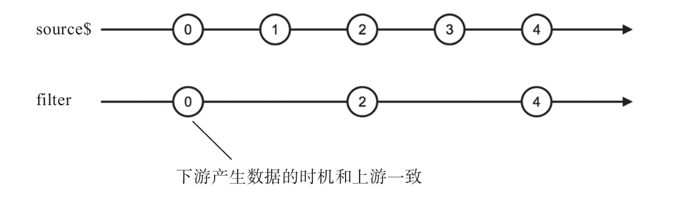

过滤类操作符怎么可能少得了名字就叫filter（过滤）的操作符，filter是最简单最常用的一个过滤类操作符。使用filter很简单，使用一个判定函数，比如，我们要获得1到5之间所有的偶数，代码如下：
import 'rxjs/add/observable/range';
import 'rxjs/add/operator/filter';
const source$ = Observable.range(1, 5);
const even$ = source$.filter(x => x % 2 === 0);
even$.subscribe(
console.log,
null,
() => console.log('complete')
);
在上面的代码中，首先利用range产生1到5之间所有的正整数，然后通过filter来过滤掉不满足偶数判定条件的数字，最后，even$吐出的就只有偶数数字，输出如下：
2 4 complete
使用filter产生的Observable对象，产生数据的时机和上游是一致的，当上游产生数据的时候，只要这个数据满足判定条件，就会立刻被同步传给下游。
我们对上面的代码做一些修改，体现产生时间的跨度，可以看得更清楚，代码如下：
const source$ = Observable.interval(1000); const even$ = source$.filter(x => x % 2 === 0);
上面filter对数据流操作的弹珠图如图7-2所示。

图7-2 filter的弹珠图
从弹珠图上看到，当上游source$产生0、2、4这些数据的时候，因为满足判定条件，会立刻出现在filter产生的Observable对象中，当然，filter也只有当上游产生数据的时候才有料可以传递给下游。
filter并不支持“结果选择器”参数，所以，真的只能做“过滤”功能，不能做结果转化。接下来，我们看一个支持“结果选择器”参数的操作符，叫first。